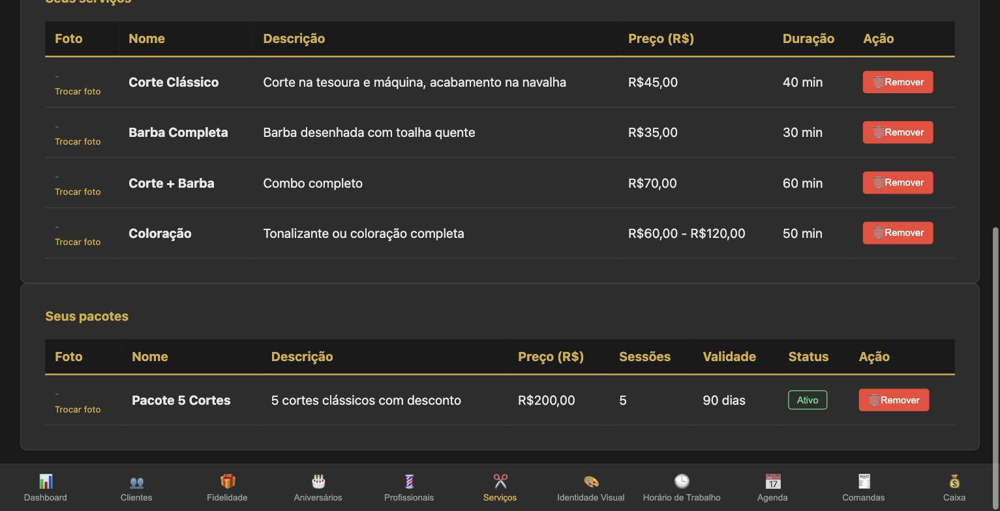
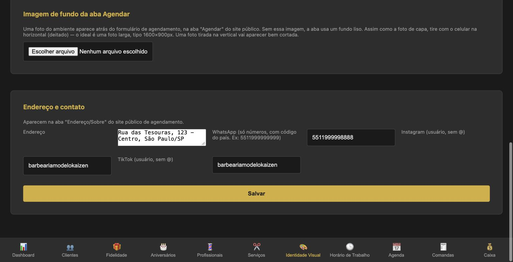
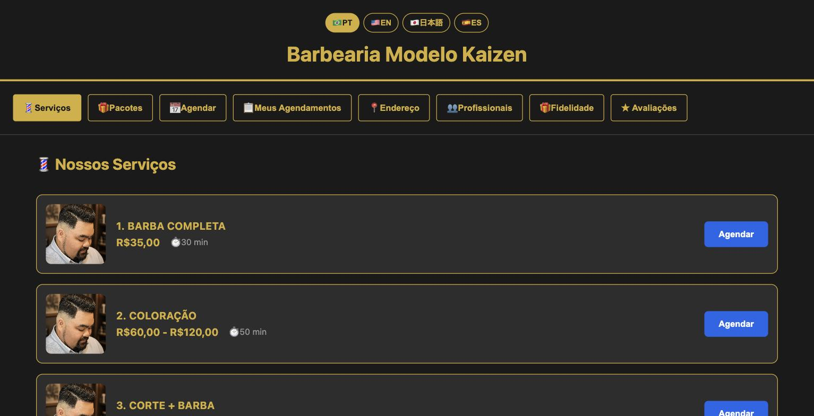
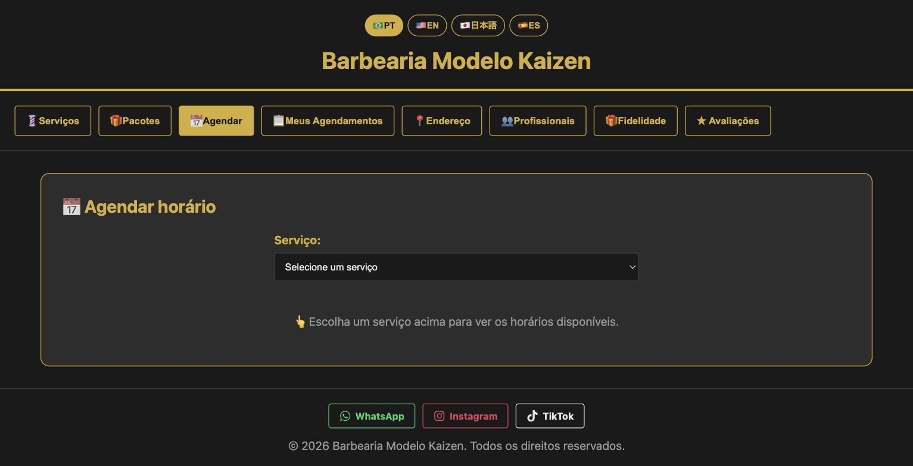

Seguindo 5 passos nesta ordem, sua barbearia sai do zero e fica pronta para receber agendamentos pelo Kaizen Flow — sem travar em nenhuma etapa.
A ordem importa
Cada passo usa o que foi cadastrado no anterior. Pular um deles é o motivo mais comum de "o sistema não mostra horário nenhum".
- Profissionais — quem atende.
- Horário de Trabalho — quando cada um atende.
- Serviços — o que o cliente pode escolher.
- Identidade Visual — como sua página pública aparece.
- Teste como cliente — conferir tudo antes de divulgar o link.
Todas as abas ficam na barra inferior do painel: Profissionais, Serviços, Identidade Visual e Horário de Trabalho.
Passo 1 — Cadastre seus profissionais
Vá em Profissionais e cadastre cada pessoa que atende na barbearia — inclusive você, se também corta cabelo.
| Campo | Obrigatório? | Para que serve |
|---|---|---|
| Nome | Sim | Aparece na Agenda, nas Comandas e na página pública |
| Telefone | Não | Contato interno |
| Comissão % | Não | Usada no cálculo de comissão do Caixa |
| Foto | Não | Aparece na aba Profissionais da página pública |
Login do profissional (opcional): na lista "Seus profissionais", digite o e-mail dele e clique em Convidar. Ele recebe um e-mail para criar a própria senha. Com esse login, o profissional vê só Agenda, Comandas e Minha Comissão — nada de Caixa, configurações ou dados de outros profissionais. O passo a passo do dia a dia dele está no Bônus 2 (Manual de Bolso da Equipe).
Passo 2 — Configure o horário de cada profissional
Vá em Horário de Trabalho, escolha o profissional no seletor do topo e use Adicionar bloco de horário: dia da semana + hora de início + hora de fim. Depois clique em Adicionar bloco.
- Folga: um dia sem nenhum bloco já é folga. Não precisa marcar nada.
- Almoço: cadastre dois blocos no mesmo dia. O espaço entre eles some dos horários oferecidos e aparece como "Almoço" na Agenda.
- Um por um: o horário é individual. Repita o cadastro para cada profissional.
- A seção Semana atual mostra como ficou a semana de quem está selecionado.
Exemplo de uma semana com almoço e folga no domingo e na segunda:
| Dia | Bloco 1 | Bloco 2 |
|---|---|---|
| Ter a Sex | 09:00–12:00 | 13:00–19:00 |
| Sábado | 08:00–12:00 | 13:00–17:00 |
| Domingo e Segunda | — (folga) | — |
Se aparecer "Esse horário se sobrepõe a um bloco já cadastrado nesse dia", remova o bloco antigo antes de cadastrar o novo.
Passo 3 — Cadastre seus serviços e pacotes
O catálogo cadastrado aqui é o que aparece na Agenda e na página pública. Serviço que não está aqui, o cliente não consegue escolher.
Vá em Serviços e preencha:
| Campo | Obrigatório? | Dica |
|---|---|---|
| Nome | Sim | Como o cliente reconhece: "Corte Clássico", "Corte + Barba" |
| Descrição | Não | Uma linha sobre o que inclui |
| Preço | Sim | Na moeda do seu plano |
| Preço máximo | Não | Para serviço com valor variável — aparece como faixa (ex.: R$60,00 – R$120,00) |
| Duração em minutos | Não | Define quanto tempo o horário ocupa na agenda |
| Foto | Não | Deixa o catálogo público mais atrativo |
Pacotes: marque É um pacote? e os campos mudam para Quantidade de sessões (vazio = ilimitado) e Validade em dias. Exemplo: "Pacote 5 Cortes", R$200,00, 5 sessões, 90 dias.

Passo 4 — Capriche na Identidade Visual
Este passo não trava o sistema, mas é o que faz sua página pública parecer profissional. Faça antes de divulgar o link.
Vá em Identidade Visual:
| Item | Onde aparece | Dica de foto |
|---|---|---|
| Foto de capa | Topo da página pública | Celular deitado, bem larga (ideal 1600×700px) |
| Logo | Selo pequeno no canto da capa | Imagem quadrada |
| Fotos Ambiente e Fachada | Aba Endereço/Sobre | Quantas quiser |
| Imagem de fundo da aba Agendar | Atrás do formulário de agendamento | Celular deitado (ideal 1600×900px) |
| Endereço, WhatsApp, Instagram, TikTok | Aba Endereço/Sobre e rodapé | WhatsApp só com números e código do país (ex.: 5511999999999); Instagram e TikTok sem @ |
Foto tirada com o celular em pé aparece bem cortada na capa e no fundo. Depois de preencher endereço e contato, clique em Salvar.

Assim o cliente vê o seu catálogo na página pública, com as abas Serviços, Pacotes, Agendar, Endereço, Profissionais e mais:

Passo 5 — Teste como se fosse cliente
Antes de mandar o link para os clientes, abra a sua página pública no celular e faça um agendamento de teste:
- Na aba Agendar, escolha um serviço.
- Escolha o profissional e uma data em que ele trabalha.
- Confira se os horários oferecidos batem com o Passo 2 — sem horário no almoço nem em dia de folga.
- Conclua o agendamento e veja se ele aparece na Agenda do painel.
- Cancele o agendamento de teste na Agenda (o horário volta a ficar livre na hora).

Se não aparecer nenhum horário, volte ao Passo 2: quase sempre falta bloco de horário para aquele profissional naquele dia.
Checklist final
- Todos os profissionais cadastrados (você incluído, se atende)
- Convite de login enviado para quem vai usar o painel (opcional)
- Horário de trabalho configurado para cada profissional, com almoço e folgas
- Serviços (e pacotes, se usar) com preço e duração certos
- Capa, logo, fotos, endereço e WhatsApp preenchidos
- Agendamento de teste feito na página pública e cancelado
Tudo marcado? Sua barbearia está pronta. O próximo passo é ensinar a equipe a operar o dia a dia — isso está no Bônus 2, Manual de Bolso da Equipe.
Kaizen Flow · Bônus 1 — Implantação Kaizen · Material exclusivo para assinantes.